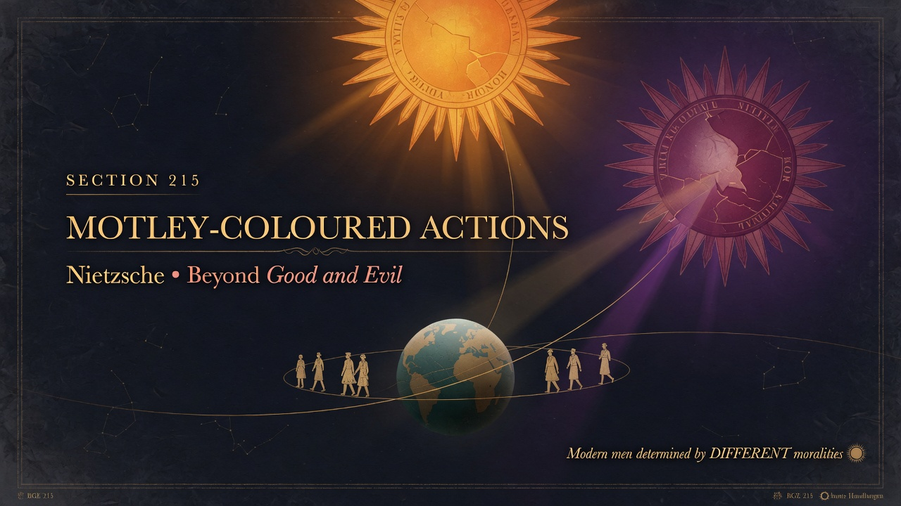
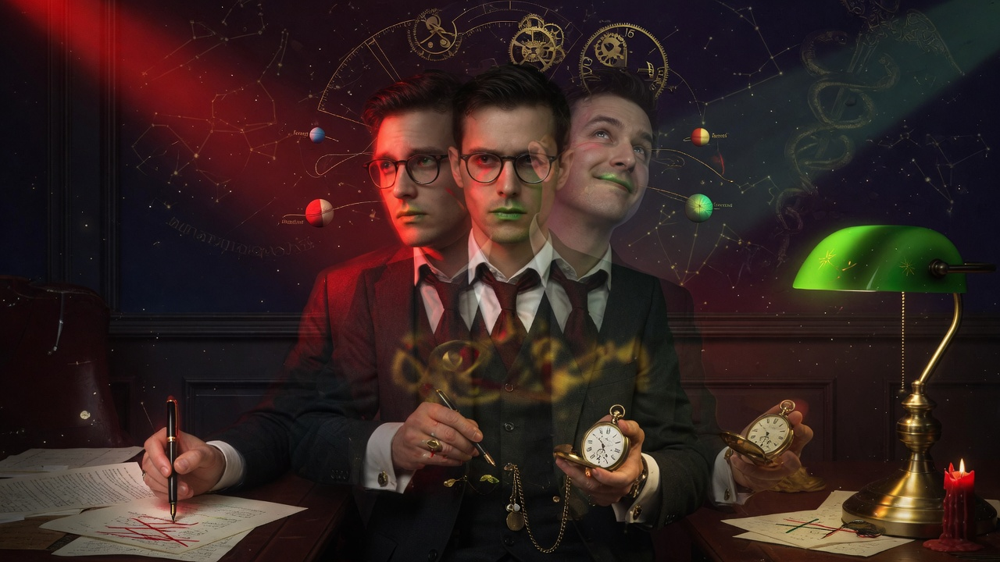
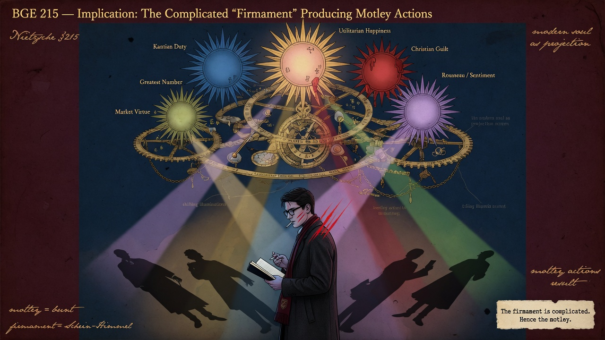

Part Seven: Our Virtues • Beyond Good and Evil
Section 215 observes that we modern men, thanks to the complicated mechanics of our starry heaven, are determined by different moralities; our actions change their lights into different colours according to which star or constellation is currently in the ascendant. We have inherited and internalized multiple moral standards that pull in different directions.
This multiplicity is both our burden and our distinction. It produces inner tension, experiment, and the possibility of new syntheses, yet also confusion and the temptation to flatten everything into a single lowest-common-denominator morality.
Key Insight: The modern European (and contemporary global citizen) carries within himself a firmament of competing moral suns. Virtue today consists less in obeying one code than in navigating, ranking, and occasionally synthesizing the many inherited lights.
Modern companion: Pluralism, cultural inheritance, and rapid value change mean few people operate under a single coherent morality. The free spirit learns to chart this inner firmament, to know which “sun” governs a given drive or decision, and to cultivate the capacity to let higher or stronger stars dominate when rank requires it—rather than surrendering to moral relativism or forcing artificial unity.


